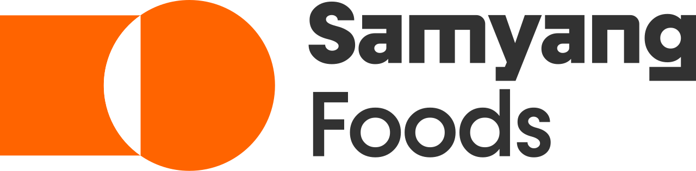

홈 > 브랜드 매거진 > 해태제과
해태제과
해태제과(Haitai Confectionery & Foods)는 허니버터칩으로 유명한 한국의 제과 기업으로, 1945년 창업했다.
산업 분야 식음료 · 공개 등급 자료 기반 · 브랜드 평가 4.2 ★
한눈에 보는 브랜드
해태제과는 1945년 광복 직후 박병규 등 네 명의 창업자가 일본인이 남기고 떠난 용산의 제과공장을 인수해 세운 국내 최초의 민족자본 제과기업이다. 1970년 국내 최초 아이스크림콘 부라보콘과 1970년대 맛동산·에이스의 연속 히트로 도약했으나 1997년 외환위기 속 부도를 맞았고, 2005년 업계 4위였던 크라운제과 컨소시엄에 인수되며 크라운해태 체제로 재편됐다.
현재 별도 매출 5,838억원, 연결 6,292억원(2024년) 규모의 종합 제과기업으로 자리하고 있다.
브랜드 관점
한국 과자 시장은 오리온과 농심이 20%대 초반에서 선두를 다투고 크라운(약 9.5%)·롯데웰푸드·해태(약 7.8%)가 추격하는 과점 구조다. 해태의 차별점은 80년 가까이 이어 온 장수 브랜드 자산과 폭발적 화제성에 있다.
2014년 일본 가루비와 합작한 해태가루비가 내놓은 허니버터칩은 단맛 감자칩이라는 역발상으로 전국적 품절 대란을 일으키며 짭짤한 스낵 일변도였던 시장의 공식을 흔들었다. 다만 수출이 매출의 6~8% 수준에 머물러 경쟁사보다 해외 의존도가 낮은 점은 약점이자 성장 여백이다.
그룹은 아산 신공장 증설과 중국·동남아 확장, 연 100개 이상 신제품 출시로 내수 정체와 K-과자 수출 호조라는 두 흐름에 동시 대응하며 활로를 모색하고 있다.
시작과 성장
해태제과의 출발은 1945년 10월, 광복으로 일본인이 두고 떠난 용산의 적산 제과공장을 박병규·민후식·신덕발·한달성 네 사람이 인수해 해태제과합명회사를 세우면서 시작됐다. 물자가 귀하던 해방 공간에서 순수 국내 자본과 기술로 출범한 첫 식품회사라는 상징성을 안고 있었다.
1947년 웨하스와 캐러멜류로 기반을 다진 뒤, 첫 번째 전환점은 1970년대에 찾아왔다. 1970년 국내 최초 아이스크림콘 부라보콘에 이어 맛동산·에이스·누가바·바밤바가 잇따라 히트했고 1972년 증권시장에 상장하며 성장기를 맞았다.
두 번째 전환점은 외환위기였다. 1997년 부도로 무너진 해태제과는 2005년 1월 매출 규모가 절반에도 못 미치던 크라운제과 컨소시엄에 인수됐고, 2017년 그룹은 크라운해태홀딩스 지주회사 체제로 정비되며 오늘에 이르렀다.
브랜드 아이덴티티
브랜드의 핵심 가치는 옳고 그름을 가린다는 상상의 동물 해태에서 빌려온 정직과 신뢰, 그리고 오랜 세월 가족의 간식을 책임져 온 친근함이다. 워드마크는 한글의 자음과 모음을 조합하고 가운데를 비워 둠으로써 세상을 향한 열린 시선과 창조적 상상을 표현하며, 전통과 열정을 담은 해태 레드를 시그니처 컬러로 쓴다.
어린이부터 중장년까지 세대를 폭넓게 아우르는 소비층을 겨냥하고, 친구처럼 곁을 지키는 따뜻하고 유쾌한 목소리로 소비자에게 말을 건넨다.
제품과 서비스
제품군은 비스킷·스낵·초콜릿·캔디·빙과를 두루 아우른다. 맛동산과 홈런볼, 에이스, 오예스, 자유시간, 버터링이 대표 장수 제품이며, 2014년 허니버터칩이 새 간판으로 합류했다.
가격대는 홈런볼이 1,900원 안팎, 허니버터칩 60g 제품이 3,000원 선이다. 대형마트와 편의점, 자체 온라인몰인 해태몰을 축으로 유통되며 중국·동남아로의 수출도 넓혀 가고 있다.
현재 상태
본사는 서울 용산구 남영동에 있으며, 모회사는 2017년 지주회사로 전환한 크라운해태홀딩스다. 해태제과식품의 2024년 매출은 별도 기준 5,838억원, 연결 기준 6,292억원이며, 그룹 지주사 크라운해태홀딩스의 2024년 연결 매출은 약 1조원 규모로 3년 연속 증가세를 이어갔다.
그룹 전체 직원 수 등 세부 수치는 공시 시점에 따라 달라 미공개로 둔다.
타임라인
BI/CI 변천사
함께 읽을 브랜드
 식음료 · 자료 기반롯데웰푸드
식음료 · 자료 기반롯데웰푸드롯데웰푸드(Lotte Wellfood)는 빼빼로·가나 초콜릿으로 유명한 롯데그룹 계열 제과 기업으로, 1967년 롯데제과로 설립돼 2023년 현 사명이 됐다.
 식음료 · 자료 기반오리온
식음료 · 자료 기반오리온오리온(Orion)은 초코파이로 유명한 한국의 대표 제과 기업으로, 1956년 동양제과로 설립됐다.
식음료 · 자료 기반농심농심(Nongshim)은 신라면으로 유명한 한국의 대표 라면·스낵 기업으로, 1965년 설립돼 1978년 농심으로 사명을 바꿨다.
식음료 · 자료 기반크라운제과크라운제과(Crown Confectionery)는 크라운해태홀딩스를 지주회사로 하는 대한민국의 종합 제과 기업이다.
네슬레(Nestlé)는 스위스 브베에 본사를 둔 세계 최대 규모의 식음료 다국적 기업이다.

식음료 · 자료 기반삼양식품삼양식품(Samyang Foods)은 1961년 설립된 한국의 라면 기업으로, 국내 최초의 인스턴트 라면 삼양라면과 불닭볶음면으로 알려져 있다.
 식음료 · 자료 기반동서식품
식음료 · 자료 기반동서식품동서식품(Dongsuh Foods)은 맥심(Maxim) 커피로 유명한 한국의 인스턴트 커피 기업으로, 1968년 설립됐다.
식음료 · 자료 기반대상대상(Daesang)은 미원과 청정원으로 유명한 한국의 종합 식품·조미료 기업으로, 1956년 창업했다.